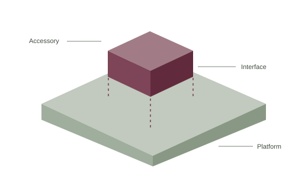
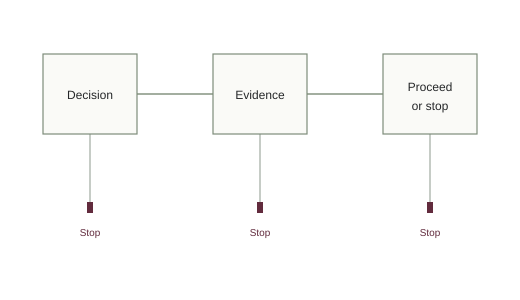

Selected work
The design has
to survive reality.
A new company. A production agent. Two ventures of my own. A written practice behind the work.
Explore the projectsVenture CTO at McKinsey
A new business, from the ground up.
A digital business stood up alongside an industrial parent. One technical seat, held through the first build.
During nine years at McKinsey, I served as CTO of North America's first large-scale digital business build. I was brought in for two weeks as product owner and stayed as CTO.

What I designed
I designed the new company's technology from scratch: its architecture, enterprise security posture, engineering environment and the boundary between the parent's legacy systems and the new company's stack.
What it shows
I have held the technical seat in a venture built next to a parent, and worked the boundary with the parent's CIO.
Independent designer and builder
An agent that made it into production.
An AI agent designed and built for an insurance brokerage. Technical choices grounded in an operating business.
As an independent, I designed and built an AI agent for an insurance brokerage. The system is in production, and my work there is complete.

What I designed
I built the agent on Anthropic's Claude Agent SDK and made the case for the model choice against an incumbent enterprise agreement.
What it shows
The model choice was a business decision as well as a technical one. I carried that decision with executives and built the resulting system.
Founder and operator
The built environment, made measurable.
Aerial reality capture for the built environment, serving customers across the Midwest.
Sightline Geospatial serves AEC firms, civil and county engineers, general contractors, utilities and aggregate producers across the Midwest.

What I designed
I chose the market, the unit and the price for an aerial reality capture business. I operate the venture and answer for its margin.
What it shows
I live with my own design decisions. The relationship between an offer, its delivery and its economics is part of the daily work.
Founder
A small component. A larger system.
NDAA-compliant payload accessories for uncrewed aircraft, built for a leading US drone platform.
Miniature Systems makes payload accessories for uncrewed aircraft. The venture serves a market shaped by the requirements of a larger platform and a regulated buyer.

What I designed
The work centers on the relationship between the accessory and the platform it depends on: what it adds, what it inherits and where the boundary belongs.
What it shows
In a hardware venture, inherited constraints are part of the business design. I make those choices in a venture of my own.
Author
A practice you can read.
A written method for standing up an AI-native venture next to a PE-backed services firm.
My practice is written down. The method runs in gated phases, with a written way to stop at each gate and a full practitioner's guide behind it.

What I designed
The method sets out how to make the design decisions, identify the evidence each phase requires and decide whether to proceed.
What it shows
The standards of the engagement are explicit. A short introduction to the method is available on request.
Ask about the methodThe work behind the work.
Nine years at McKinsey as an expert in front-office technology. Two years at Appirio as a lead architect. Co-founder of Live & Breathing and Modern Furniture Collection in Atlanta. The third employee at ShootQ, a company I named.
Read my story